This Issue
August 2026 edition
132 vs 327
Recorded flip resales this edition versus the same two-month window a year ago; operators closing at least one exit fell to 87 from 192
Flip resales fell to 132 from 327 a year ago, and the operator field thinned faster than the deal count
Recorded flip resales came in at 132 this edition against 327 a year ago, and the number of operators closing at least one exit fell to 87 from 192. The survivors are more concentrated: the top ten took roughly 58% of estimated flip revenue, against about 39% a year ago. The buy side is thinner still — 181 homes bought by flippers versus 406. Median hold on completed exits was 166 days versus 175. Counts are recorded instruments and lag four to eight weeks, and the most recent month can grow as late records arrive.
Investor Playbook
What this issue's numbers suggest checking, by investor type. Observations from recorded data — not investment, legal, or tax advice.
Aim the buyer list where flip exits actually moved
Wholesalers
With 87 operators closing exits versus 192 a year ago, a broadcast blast is less useful than a short list. The data suggests concentrating on the north Clay County corridor — 64118 (Nashua) at 6.1% of exits versus 0.9% a year ago and 64155 (Shoal Creek) at 3.8% versus 0.3% — plus 64132 (Swope Park) at 4.5% versus 1.5%. The typical flipped house this period was about 1,301 sqft, three beds, built around 1962; contracts outside that box are worth pricing more conservatively.
Hold discipline is holding, but the aged tail is growing
Flippers
Median hold on the 132 exits was 166 days, slightly tighter than 175 a year ago, and 30% turned in under 90 days. Against that, 43 holdings aged out in the latest month while only 115 were bought. Gross margin is estimated at roughly $81,070, or about 32% of estimated resale, and rehab and carry are not in the public record — treat it as a ceiling, not a profit. With inventory at 3,045 and fewer competing operators, the constraint this period looks like acquisition, not exit.
Less flipper competition in Jackson's older stock
Landlords
Jackson took 46% of flip exits versus 62% a year ago while flip buying fell to 181 from 406, so the operators bidding on 1950s-60s houses are fewer. Investor purchases still concentrated in 64130 (47 buys), 64133 (29) and 64132 (25). Pre-1940 stock drew 219 purchases and the 1950s 150, so inspection budget matters more than headline basis. Prices in these records are estimates — about 48% are back-computed from the recorded mortgage — so verify basis independently before underwriting rent-to-price.
Rehab money for the three-to-eight-deal band
Private lenders
Only 21 private loans were recorded this edition against 68 a year ago, while 44% of the 446 financed purchases over the trailing twelve months carried rehab dollars. The 802 operators in the three-to-eight lifetime-flip band run a median hold of 202 days on roughly 1,404 sqft, 3-bed houses built around 1960 — longer carry than the 166-day market median. That gap between programme-lender terms and a 200-day project is where the data suggests a small private book can be placed.
2-4 units are being bought to hold, not to flip
Multifamily investors
Small multi made up just 4.5% of flip exits, while 81 of the 980 investor purchases were 2-4 unit buildings at an estimated median around $365,085 and roughly $173 per sqft — close to the estimated $178 per sqft on single family. On that estimated basis there is little per-sqft discount for taking on additional units, so the case rests on unit count and rent roll rather than on entry price. Apartment 5+ transactions numbered 15 this edition.
Factoids
Numbers from this period a practitioner would repeat to a colleague. Each computed directly from recorded instruments.
58% top-ten share — Share of estimated flip revenue taken by the ten largest operators
trending up · vs about 39% a year ago
Fewer operators are closing exits and the largest ones hold a materially bigger slice of the estimated dollars. Bidding for the same house is now a shorter list of names.
181 flip purchases — Homes bought by flippers this edition
trending down · vs 406 a year ago
The refill rate has dropped further than the exit rate, and flip-held inventory stood at 3,045 in the latest month against 3,451 a year earlier. Aged-out holdings ran 43 in the latest month.
Clay 20% of flip exits — Clay County share of recorded flip resales; Jackson at 46%
trending up · Clay was 6% and Jackson 62% a year ago
Johnson County also moved up to 22% from 13%. Within zips, 64118 (Nashua) went to 6.1% of exits from 0.9%, and 64155 (Shoal Creek) to 3.8% from 0.3%.
980 investor purchases — All recorded residential investor purchases this edition
trending down · vs 1,182 a year ago and 1,055 in the prior period
Purchase volume is off 17% year over year, a shallower decline than the flip side. Single family accounted for 827 of the 980; 2-4 unit deals numbered 81.
21 private loans — Recorded private-lender loans this edition
trending down · vs 68 a year ago
Recorded private lending is scarce; institutional programme lenders dominate the trailing-twelve-month table, with Kiavi at 43 loans across 17 borrowers. Financed share was 39% of 1,139 observed purchases over the trailing twelve months.
15 assignments surfaced — Wholesale assignments that touched a recorded deed
trending down · vs 58 a year ago and 26 in the prior period
This is a floor, since most assignments never hit a deed, but the direction matches the thinner flipper buy side. The end-buyer list for an assigned contract is shorter than it was.
Market Activity — Investor Purchases
Monthly count of investor purchases of MSA properties (left axis) and the median purchase price (right axis), trailing 13 months. The most recent month can grow up to ~15% as late recordings arrive.
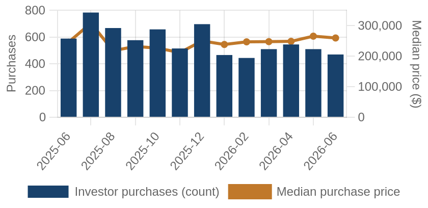
Investor purchases per month (bars) and median purchase price (line), trailing 13 months.
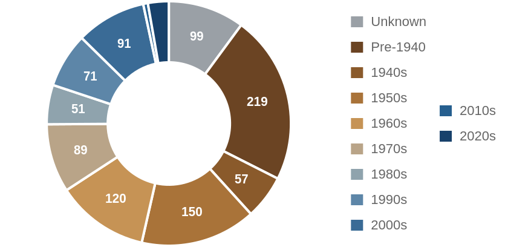
Which vintage of housing investors bought this edition, by decade built.
Where the Money Went
The geography of the period's investor activity: which zip codes saw the most recorded deals, and the largest individual transactions at street level.
The 8 busiest zip codes for investor deals
Pins rank the busiest zips by recorded investor deals (purchases + flips of existing homes) this period — #1 busiest; orange = top 3; pin size scales with deal volume. Median buy is the typical investor purchase; median sale the typical flip resale. Click a pin for details; full table below.
| # | Zip | Area | Purchases | Flips | Median buy | Median sale |
|---|
| #1 | 64130 | Marlborough | 47 | 6 | $163,856 | $174,496 |
| #2 | 64133 | Raytown East | 29 | 5 | $212,135 | $238,009 |
| #3 | 64132 | Swope Park | 25 | 6 | $162,925 | $182,010 |
| #4 | 66062 | Olathe South | 27 | 2 | $739,347 | n/a |
| #5 | 64052 | Independence West | 24 | 2 | $194,446 | n/a |
| #6 | 64119 | Antioch | 19 | 3 | $233,415 | n/a |
| #7 | 64050 | Independence | 17 | 3 | $145,768 | n/a |
| #8 | 64055 | Independence South | 16 | 4 | $202,622 | n/a |
Dollar figures on this page are estimates. This county does not disclose sale prices, so 48% of them are back-computed from the recorded mortgage at an assumed loan-to-value. Treat every price, margin and per-foot figure as indicative. Counts, dates, hold times, parties and geography come from the deed record itself and are unaffected.
A representative deal in each of the busiest zips
One deal per zip: the largest matching this market's typical house (typical for this market: 1404 sqft, 3 bed, built around 1960; priced within 4x the county assessment and under 5x its own zip's median).
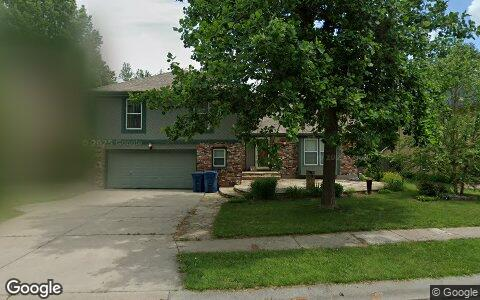
$460,047 · Purchase
3917 NE 59TH ST, Kansas City MO 64119
Single family · 1,634 sqft · Jun 23
Street View Jun 2019 — before the purchase
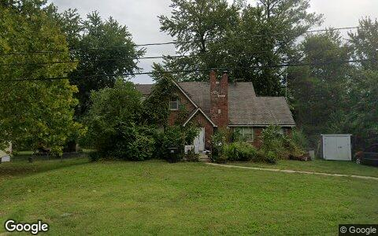
$367,678 · Purchase
915 S TRAIL RIDGE DR, Independence MO 64050
Single family · 1,851 sqft · May 14
Street View Sep 2024 — before the purchase
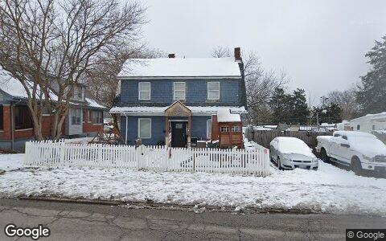
$356,243 · Purchase
629 S CRYSLER AVE # 1, Independence MO 64052
Single family · 1,829 sqft · Jun 23
Street View Jan 2024 — before the purchase
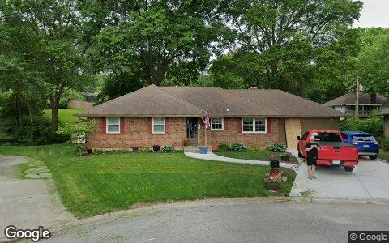
$345,800 · Purchase
3912 S CHRISTOPHER CIR, Independence MO 64055
Single family · 2,018 sqft · Jun 16
Street View May 2024 — before the purchase
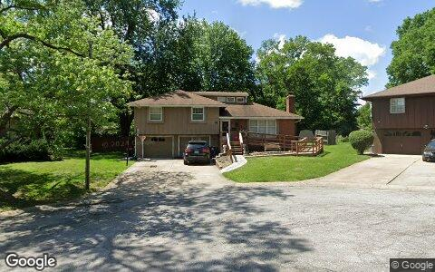
$319,067 · Purchase
10805 E 65TH ST, Raytown MO 64133
Single family · 1,394 sqft · May 7
Street View May 2024 — before the purchase
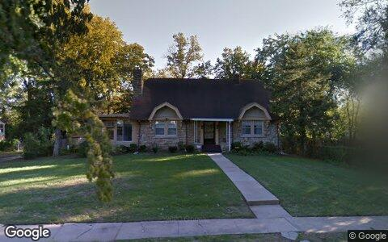
$266,000 · Purchase
1875 E 76TH TER, Kansas City MO 64132
Single family · 1,910 sqft · May 26
Street View Oct 2014 — before the purchase
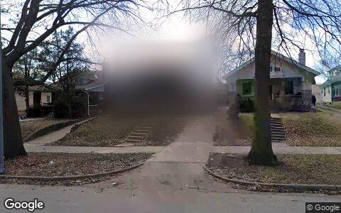
$214,263 · Purchase
4420 BENTON BLVD, Kansas City MO 64130
Single family · 1,883 sqft · Jun 9
Street View Mar 2019 — before the purchase
Deal sheet — private lending, in date order
Private loans recorded against residential property this period, oldest first.
| Date | Lender | Amount | Property | Use |
|---|
| May 1 | Smith Gerald | $168,813 | 13559 W 58TH Ter, Shawnee NE 66216 | Single family |
| May 1 | Birdsong Richard | $40,000 | 4631 W 61ST ST, Fairway KS 66205 | Single family |
| May 4 | Goodwin Mark | $135,000 | 8108 E 92ND Ter, Kansas City NE 64138 | Single family |
| May 5 | Abaugh RD TR | $40,000 | 7801 Ne San Rafael DR, Kansas City IA 64119 | Single family |
| May 5 | Abaugh RD TR | $40,000 | 7801 Ne San Rafael DR, Kansas City IA 64119 | Single family |
| May 7 | Holsinger Trevor | $271,000 | 3625 NW Anchor CT, Blue Springs KS 64015 | Single family |
| May 12 | Revocable Trust Agreement of D | $164,000 | 10420 Palmer Ave, Kansas City MO 64134 | Single family |
| Jun 1 | Mo Electric Cooperatives Emp C | $159,400 | 508 N Main ST, Butler MO 64730 | Single family |
Largest flip margin deals of the period, at street level
Gross margin = recorded sale price minus the flipper's recorded purchase price. Purchase deeds are recoverable for roughly 4 in 10 flips; rehab and carry costs are not public record.
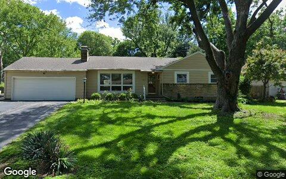
$296,280 gross · bought $390,000 (Mar 2026) → sold $686,280
6717 W 65TH TER, Mission KS 66202
Single family · 2,108 sqft · May 27
Street View May 2026 — during the flip
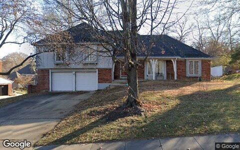
$291,356 gross · bought $290,000 (Apr 2026) → sold $581,356
5205 W 99TH ST, Overland Park KS 66207
Single family · 2,662 sqft · Jun 1
Street View Nov 2022 — before the flip (pre-renovation)
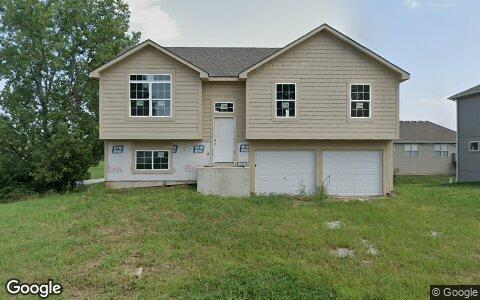
$271,517 gross · bought $163,000 (Aug 2025) → sold $434,517
12701 APPLEWOOD DR, Grandview MO 64030
Single family · 1,248 sqft · May 4
Street View Aug 2024 — before the flip (pre-renovation)
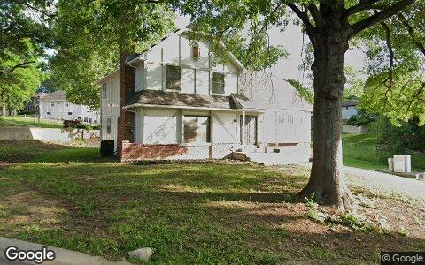
$239,463 gross · bought $190,000 (Nov 2024) → sold $429,463
1516 E 99TH ST, Kansas City MO 64131
Single family · 2,395 sqft · May 12
Street View May 2026 — during the flip
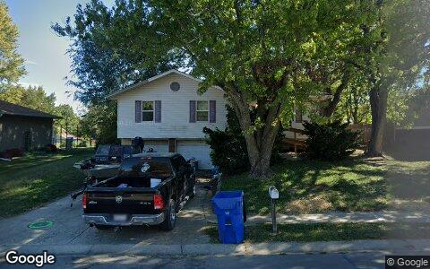
$221,578 gross · bought $139,650 (Jul 2025) → sold $361,228
1401 SE ROYAL ST, Oak Grove MO 64075
Single family · 1,056 sqft · May 26
Street View Oct 2024 — before the flip (pre-renovation)
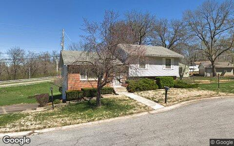
$219,430 gross · bought $178,572 (Sep 2025) → sold $398,002
9501 GRAND AVE, Kansas City MO 64114
Single family · 1,152 sqft · May 20
Street View Apr 2019 — before the flip (pre-renovation)
Flip Structure — Year over Year
How the flip market itself is changing: margins, who is doing the flipping, what they flip, and where. Same two calendar months, this year vs last, from the current data extract.
| Flip market structure | Same months last year | This edition |
|---|
| Flips sold | 327 | 132 |
| Median sale | $283,822 | $303,374 |
| Median $/sqft | $212 | $217 |
| Sale vs county-assessed | 1.93× | 1.96× |
| Median gross margin (matched buys) | $59,850 | $81,070 |
| Median margin % | 21% | 32% |
| Median hold | 5.8 mo | 5.5 mo |
| Homes bought by flippers | 406 | 181 |
| Net to inventory (bought − sold) | +79 | +49 |
| Active flippers | 192 | 87 |
| Top-10 flippers' revenue share | 39% | 58% |
| Median house: sqft / beds / built | 1346 / 3 / 1961 | 1301 / 3 / 1962 |
| Pre-1950 stock share | 27% | 23% |
| 2–4 unit share | 4% | 5% |
| Median distance from downtown | 16.5 km | 17.0 km |
Dollar figures on this page are estimates. This county does not disclose sale prices, so 48% of them are back-computed from the recorded mortgage at an assumed loan-to-value. Treat every price, margin and per-foot figure as indicative. Counts, dates, hold times, parties and geography come from the deed record itself and are unaffected.
Homes bought counts every deed recorded to a known flipper in the window, resold or not. Net to inventory is that minus flips sold. The standing stock is in the Flip Pipeline section.
Attributed profit per flip (per-investor aggregates, by drop period): Feb 26→Jun 26: 1,363 flips, $23,077/flip · Jun 26→Aug 26: 396 flips, $49,558/flip.
County mix (share of flips, last year → this edition): Jackson 62%→46% · Johnson 13%→22% · Clay 6%→20% · Wyandotte 5%→4% · Cass 5%→3% · Caldwell 0%→2% · Platte 4%→2% · Miami 4%→2% · Clinton 0%→1%.
Biggest zip share moves: Nashua 0.9%→6.1% · Shoal Creek 0.3%→3.8% · Swope Park 1.5%→4.5% · Shawnee Northwest 2.8%→0.0% · Spring Hill 3.4%→0.8% · Blue Valley 2.1%→0.0%.
Flip Pipeline — Buying, Selling and Inventory
Homes bought by known flippers and homes they resold, per month, alongside the stock sitting in flipper hands. A house enters inventory when a flipper buys it and leaves on the next recorded sale, at any price. Purchases still unsold after five years are treated as holds and drop out.
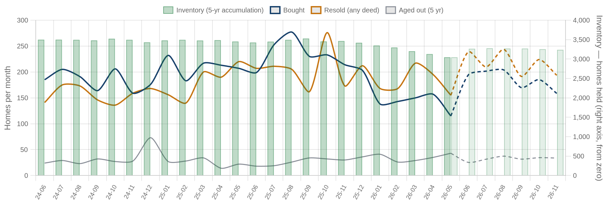
Solid = recorded, dashed = projected. Green bars are inventory on the right axis: homes bought and not yet resold. Aged out is purchases passing five years unsold. Inventory moves by bought minus resold minus aged out.
| Flip pipeline | Bought / mo | Resold / mo | Aged out / mo | Inventory |
|---|
| Latest recorded month (2026-05) | 115 | 155 | 43 | 3,045 |
| Projected (2026-11) | 159 | 194 | 34 | 3,237 |
Method: a straight-line trend through the last 24 months, adjusted for the month of the year, shown dashed as a projection. The series stops before the newest month or two, where deeds are still recording.
Who's Funding the Deals
First mortgages open on flipper purchases from Jul 2025 – Jun 2026 that have not yet resold. 39% carried recorded debt; the rest closed cash or off-record. Ranked by deal count.
39%
Purchases financed
446 of 1,139 flipper purchases carried a recorded first mortgage
$154,000
Typical loan
recorded lien amount; this county does not disclose sale prices, so loan-to-price cannot be computed here
| Lender | Loans | Borrowers | Median loan | Median purchase |
|---|
| Kiavi Funding INC | 43 | 17 | $146,700 | $165,053 |
| Loan Funder LLC | 21 | 4 | $156,000 | $183,939 |
| Hometown Equity Mortgage LLC | 12 | 6 | $147,250 | $131,500 |
| Commercial Lender LLC | 11 | 6 | $120,000 | $86,500 |
| Crossroads MGMT Group LLC | 9 | 7 | $161,000 | $97,500 |
| S & P Financial Services INC | 8 | 4 | $109,858 | $106,987 |
| Cap One Lending LLC | 7 | 2 | $172,800 | $210,140 |
| Dayspring Bank | 7 | 1 | $137,385 | $126,076 |
| MB Bank | 7 | 2 | $154,654 | $146,300 |
| Community Mortgage LLC | 6 | 5 | $170,050 | $217,500 |
Dollar figures on this page are estimates. This county does not disclose sale prices, so 48% of them are back-computed from the recorded mortgage at an assumed loan-to-value. Treat every price, margin and per-foot figure as indicative. Counts, dates, hold times, parties and geography come from the deed record itself and are unaffected.
Rates and terms are not published: the county feed models both. Borrowers counts the distinct flippers on each lender's book. Loan vs price is the recorded first mortgage divided by what the buyer paid. Above 1.00x the lender is funding purchase plus rehab; below it the buyer brought cash to the table. Blanket mortgages covering several parcels are excluded, as are loans outside 0.1x-3x the price. Rates and points are not public record.
Flipper Profile — The Working Flipper
The 70th–90th percentile of local flippers by lifetime flip count — the established operators below the whales: 3–8 lifetime flips each. Bath counts are not in the assessor extract.
802
Flippers in the band
each with 3–8 lifetime flips (avg 4.3)
$40,000
Median gross margin
5,538 flips matched to their purchase price
6.6 mo
Typical hold
purchase to resale, matched deals
1404 sqft · 3 bd
Typical house
median year built 1960
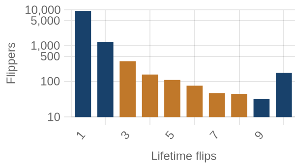
flippers by lifetime flips · orange = this band
Where they work: Marlborough (64130) 3% · Hickman Mills (64134) 3% · Raytown East (64133) 3% · Independence West (64052) 3% · Raytown South (64138) 2%.
Market Pulse
| per month, Feb–Jun 2026 | per month, Jun–Aug 2026 | change | avg/mo 2yr | avg/mo 4yr |
|---|
| ▼ Homes bought by flippers | 203 | 91 | -55% | 194 | 176 |
| ▼ Flips sold (deeds) | 164 | 66 | -60% | 181 | 169 |
| ▲ Lending deals funded | 30 | 68 | +129% | — | — |
| ▲ Seller/notes held (net) | 17 | 59 | +258% | — | — |
| ▼ Investors (net) | 545 | -340 | −885/mo | — | — |
Flips and flipper purchases = recorded deeds, same two months each year; their 2- and 4-year columns are per-month averages of the deed series. The remaining rows come from the investor file, which spans 13 months, so they have no multi-year average (2026: Jun 2026 → Aug 2026; 2025: Feb 2026 → Jun 2026).
Past Issues
Methodology
Source Data
County recorder & assessor via FARES
Every figure is computed from recorded instruments (deeds, mortgages, assignments) and assessor property records for the five counties of the Kansas City-Elyria MSA. No surveys, no estimates, no listings data.
This edition analyzes transactions dated May 1 – June 30, 2026, as recorded through the 2026-08 data extract.
Who Counts as an Investor
Transaction-pattern identification
Investors are entities whose recorded transaction history looks like investing: rental holding (landlords), short-hold resales (flippers), private mortgage lending, note holding, or contract assignment (wholesalers). Banks, homebuilders, iBuyers, SFR funds, and government entities are identified by name and reported separately from small investors.
How Comparisons Work
Attribution deltas + same-window comparisons
The Market Pulse reports activity attributed between successive data drops, from the per-investor lifetime totals maintained upstream — periods differ in length, so per-month rates are shown. Elsewhere, "vs. year ago" compares the same calendar months one year earlier, counted from the same data extract. Transfers under $5,000 (quitclaims, partial interests) are excluded everywhere. Counts lag recording by 4–8 weeks, and the newest month can grow up to ~15% as late records arrive — direction is reliable before magnitude.
Known Limits
Floors, not ceilings
Wholesale assignments only appear when they touch a recorded deed, so those counts are a floor. Flip hold times are measured from the prior recorded sale. Names are the owner of record, which may be an LLC or trust.
About
Purpose
A working tool for small real estate investors in Greater Kansas City: what actually closed, where, at what prices, and what it suggests checking next — one theme per issue.
Cadence
Published with each bi-monthly data drop, covering the two most recent complete months of recorded activity.
Disclaimer
Observations from public records, not investment, legal, or tax advice. Past activity does not guarantee future results. Verify any property or counterparty independently before transacting.